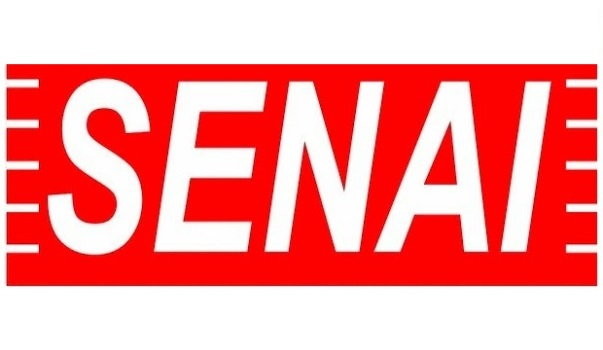

Sobre mimFábio Oliveira, 20 anos. Sou casado, não tenho filhos, minha esposa é autônoma e toma conta do seu negócio por mais de 5 anos. Sou uma pessoa muito caseira, gosto de ficar em casa com minha família, Entretanto, também costumo sair aos finais de semana, no bairro mesmo, em Sorocaba, visitando amigos ou os pais. Às vezes, vamos jantar fora. Sou uma pessoa calma, com facilidade de relacionamento interpessoal, sempre cultivei muitas amizades nas empresas em que trabalhei, mas por outro lado, sou bastante persistente na busca de meus objetivos pessoais e profissionais.Formas de contato
Sobre esse projeto
Este projeto foi proposto pela professora Denilce e explora os estudos do próprio aluno de Programação Web na Fatec Sorocaba.
Objetivos do projeto
Criar uma página como portfólio do aluno
Incentivar o aluno a se familiarizar com as ferramentas usadas no mercado de trabalho
Possibilitar ao recrutar uma forma de avaliar o candidato juntamente ao currículo
Guco Agência WebEstou atuando aqui desde dezembro de 2017 como Desenvolvedor Web.Minhas principais funções são:
Desenvolver o Front-End e Back-End de aplicações através de frameworks como VueJs e Laravel
Versionar os projetos com o Git através do BitBucket
Fazer consultas ao banco de dados através do Eloquent no Laravel e também mySql diretamente no banco
Arysta LifescienceAtuei de agosto a dezembro de 2017 como Analista de Suporte.Minhas principais funções eram:
Dar suporte aos usuários na utilização dos softwares da empresa
Setup de computadores para todos os setores
J!QuantAtuei de março de 2015 até junho de 2017 como Desenvolvedor Web.Minhas principais funções eram:
Desenvolver o Front-End e Back-End de aplicações através de frameworks como ReactJs e NodeJs
Versionar os projetos com o Git através do Github
Fazer consultas ao banco de dados através do MongoDB
Fatec SorocabaAtualmente estou cursando o quinto semeste de Análise e Desenvolvimento de SistemasAs principais atribuições são:
Ter conhecimento de programação estruturada, orientada a objetos e web
Ter conhecimento sobre bancos de dados relacionais
Levantamento de requisitos e documentação do projeto
Estar atento às regras de negócio do cliente
Senai Sorocaba

Me formei como técnico em Mecatrônica em 2015, como aluno destaque daquele curso.As principais atribuições são:
Ter conhecimento técnico sobre mecânica, eletrônica, informática, pneumática e hidraulica